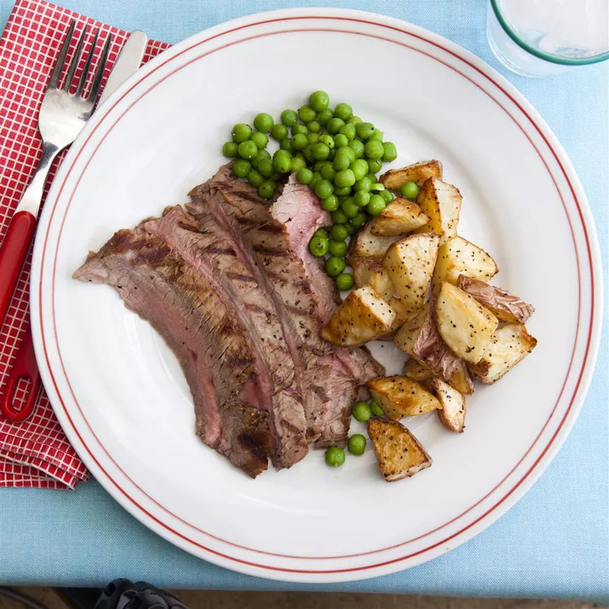
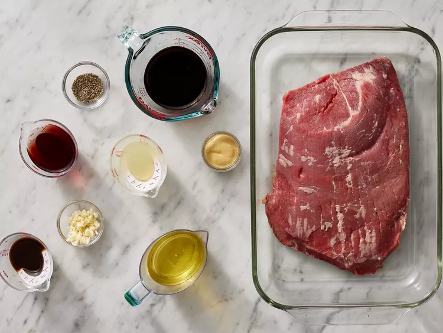
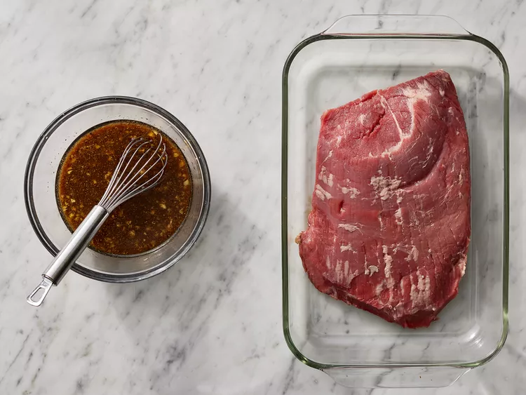
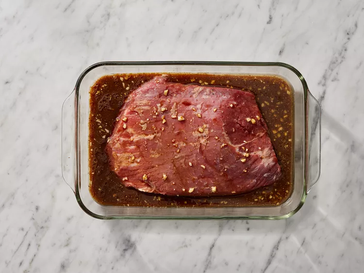

Flank steak is a lean cut of beef that comes from the cow's lower abdominal muscles. It's a relatively tough cut that's low in fat, which means a few things: Flank steak doesn't need to be trimmed, it's inexpensive compared to other cuts, and it benefits greatly from marination.
Flank and skirt steaks are similar in a lot of ways, but they do have notable differences. Skirt steak comes from the diaphragm of the cow, while Flank steak comes from the lower abdomen. Also, skirt steak is fattier and has more marbling than Flank steak. Flank steak is thicker and wider.
No Flank steak? No problem. Skirt steak is a great substitute. Top round and hanger steak are also excellent options.
This crowd-pleasing Flank steak marinade consists of the following ingredients: vegetable oil, soy sauce, red wine vinegar, lemon juice, Worcestershire sauce, Dijon mustard, garlic, and ground black pepper.
As long as you marinate the Flank steak in the fridge for two to six hours, you'll have great results. However, for the absolute best results, marinate overnight or up to 12 hours.
There are plenty of ways to perfectly cook a Flank steak. In this recipe, the steak is grilled — we love the bold, smoky flavor the grill gives the meat. But you can also easily cook your Flank steak in the oven or on the stove. You'll find the step-by-step recipe for marinated and grilled Flank steak below, but here are some rough guidelines for three different Flank steak cooking methods:
It depends on the degree of doneness you're after. This marinated Flank steak should be totally cooked after about 5 minutes of grilling time on each side. Of course, tastes and preferences will vary.
"I've made this twice and it was wonderful both times," says gertrong. "Each time I marinated the meat for 24 hours and ended up with a wonderful flavor and very tender meat."
"Easy to prepare and pretty tender," according to one Allrecipes community member. "As another reviewer suggested, I boiled the remaining marinade until it thickened into a nice sauce and drizzled a little over the meat and added some butter sauteed mushrooms. Looked fancy and tasted wonderful!"
"This recipe was so easy and tasted FANTASTIC," raves DUBYANGE. "I always love to marinade meat in Italian dressing but this takes the cake. Luckily we ate it all because if there was any left, I would have kept eating it. Way to go on this easy, great tasting recipe. I wouldn't change a thing."
Editorial contributions by Corey Williams.
Gather all ingredients.
Whisk together oil, soy sauce, vinegar, lemon juice, Worcestershire sauce, Dijon mustard, garlic, and pepper for marinade until thoroughly combined. Place steak in a 9x13-inch glass baking dish.
Pour marinade over Flank steak in the baking dish; turn several times to coat thoroughly with marinade. Cover, and refrigerate for 2 to 6 hours, or up to 12 hours if you have time.
When ready to cook, preheat an outdoor grill for medium-high heat and lightly oil the grate.
Remove steak from the marinade and shake off excess. Discard the remaining marinade.
Cook steak on the preheated grill for about 5 minutes per side, or to desired doneness.

Remove from the grill and let rest for 5 minutes before slicing and serving.
Serve hot and enjoy!